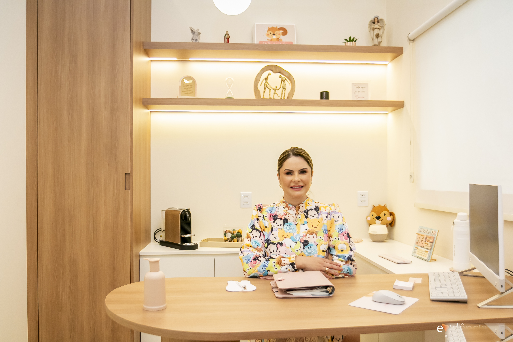

Odontopediatria em São José do Rio Pardo
Um começo de vida
merece cuidado.

CROSP 95.948 Responsável técnica
Cuidado que acolhe,
escuta que acalma.
Cada sorriso infantil tem o seu próprio ritmo. No consultório da Dra. Gabriela Faria, a odontopediatria é guiada pelo respeito e pela tranquilidade: um ambiente sereno e preparado para que a criança construa memórias positivas com a saúde bucal desde a primeira consulta.
“O atendimento infantil deve ser leve, seguro e construído no tempo de cada criança.”
Pilares do atendimento
-
Tempo da criança Consultas sem pressa, respeitando cada momento e adaptando o ritmo ao bem-estar do pequeno.
-
Parceria com as famílias Diálogo aberto, transparente e acolhedor de mãe para mãe com segurança clínica.
-
Estrutura humanizada Espaço lúdico planejado em São José do Rio Pardo para prevenir o medo de dentista.
- 5.0 ★ 105 avaliações no Google
- 100% acolhimento humanizado
- Lúdico espaço sem medo de dentista
Atendimento em consultório acolhedor São José do Rio Pardo – SP
Um cuidado que acompanha
cada fase do crescimento
1 de 5: Primeira consulta do bebê


Não encontrou o que procura? Toda conduta odontopediátrica começa por uma avaliação individualizada.
Agendar avaliaçãoServiços pensados para cada momento da infância
Da primeira consulta do bebê à ortopedia funcional e procedimentos específicos, cada atendimento é planejado com escuta atenta, paciência e respeito ao tempo da criança.
-
Atendimento integral
Odontopediatria e atendimento humanizado
Apresentação geral do cuidado odontopediátrico voltado a bebês, crianças e adolescentes, com foco em acolhimento, escuta atenta e respeito às particularidades de cada idade.
- Respeito à individualidade e ao ritmo da criança, sem protocolos rígidos universais
- Ambiente preparado para que a consulta seja um momento sereno e livre de temores
- Plano de acompanhamento individualizado estabelecido após criteriosa avaliação clínica
-
Primeiros meses e infância
Primeira consulta do bebê
Acolhimento da família, orientações sobre hábitos bucais, higiene da primeira dentição e avaliação cuidadosa do desenvolvimento dos freios e tecidos orais.
- Escuta atenta das dúvidas da família sobre rotina, higiene bucal e amamentação
- Avaliação gentil dos tecidos moles, freios orais e desenvolvimento inicial das arcadas
- Orientações preventivas personalizadas para cada momento do crescimento do bebê
-

Acompanhamento contínuo
Prevenção e saúde bucal infantil
Manutenção periódica, profilaxia cuidadosa e educação em saúde bucal pensadas para construir autonomia e preservar o sorriso em desenvolvimento.
- Profilaxia e limpeza preventiva delicada, respeitando a sensibilidade da criança
- Aplicação profissional de flúor indicada individualmente conforme a necessidade clínica
- Instrução lúdica e prática de escovação e uso do fio dental adaptada à família
-
Saúde e reabilitação
Tratamento restaurador e cárie infantil
Abordagem conservadora e precisa para lesões de cárie e alterações estruturais do dente, restabelecendo função, conforto mastigatório e harmonia estética.
- Exame criterioso para diagnosticar lesões em estágios iniciais ou avançados
- Conduta conservadora e adaptada às necessidades clínicas específicas da criança
- Diálogo transparente com os pais antes de qualquer procedimento para segurança total
-

Desenvolvimento orofacial
Ortopedia Funcional dos Maxilares (OFM)
Diagnóstico precoce de desequilíbrios na mordida e nas arcadas ósseas da criança, aproveitando o potencial natural de crescimento orofacial.
- Avaliação precoce da relação entre maxila e mandíbula em momentos oportunos do crescimento
- Estímulos funcionais que auxiliam no direcionamento equilibrado das estruturas ósseas e musculares
- Planejamento individualizado e indicação de aparelhos funcionais quando recomendados
-

Procedimentos e conforto
Cuidados específicos e sedação consciente
Atendimentos e procedimentos oferecidos pela clínica para situações específicas, como laserterapia, frenectomia e sedação consciente com óxido nitroso.
- Laserterapia como suporte terapêutico para alívio de sensibilidade e reparação tecidual
- Avaliação criteriosa de freios labiais e linguais (frenectomia) sob indicação profissional
- Sedação consciente com óxido nitroso: indicação estritamente condicionada à avaliação profissional prévia e às necessidades individuais de cada criança (não aplicável universalmente)
Quer saber mais sobre cada atendimento? Conheça nossa página completa de serviços com todos os detalhes e orientações para a sua família.